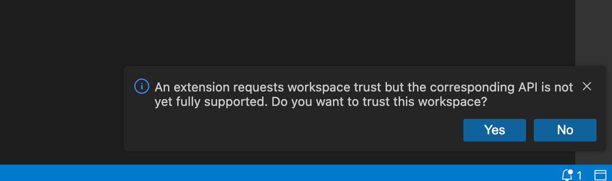
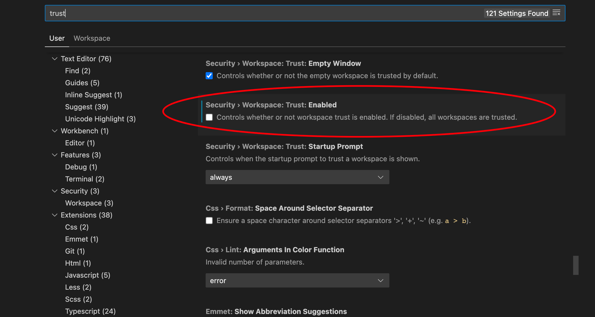

2024-03-09
Theia框架相关问题总结
修改于: 2024-03-09
关于theia的绑定
创建自定义拓展
打开-切换编辑器
引入自定义css文件
组件的状态渲染
完全关闭Theia应用
取消异步操作
依赖注入使用以及问题
在theia的dialog上新增自定义dialog
自定义任意位置的鼠标右键上下文菜单
使用diff编辑器打开两个文件对比
结合electron时候的报错
前后端通信-前端调用后端服务
控件状态保存与恢复
前后端路径传递URI
使用外部浏览器打开链接
theia启动白屏
内置一些外部插件
打开目录&文件选择器
yarn install 出现node-gyp报错
打开总是提示工作区受限
消息:
An extension requests workspace trust but the corresponding API is not yet fully supported. Do you want to trust this workspace?

- 解决
关闭询问, 即信任所有工作区

修改后会提示重启, 重启即可
注解
貌似我这边实际的问题应该是, 即使点了允许, 下一次打开还是会提示, 没空具体看哪的毛病 暂时先这样解决.
禁用pylint相关不必要检查
"--disable=missing-module-docstring",
"--disable=line-too-long",
"--disable=consider-using-f-string",
"--disable=useless-object-inheritance",
"--disable=too-few-public-methods",
"--disable=too-many-branches",
"--disable=no-member",
"--disable=trailing-whitespace"
// 这个不确定是否相关
"cSpell.minklordLength": 7,
"cSpell.ignoreRegExpList": [
"/https?:N/N//",
"/ [a-z0-9\1. 11-]+@[a-z0-9\1. 11-]+\\-[a-z]+/",
"/IN\/NICa-z0-9\\/N\\\]+[V\/N\V\][a-z0-9_\\-\\.]+/i"
]
theia获取当前默认使用的语言
import {nls} from "@theia/core";
// 当前语言是否等于默认的 en
nls.locale === nls.defaultLocale
// 或者
// window.localStorage.getItem('localeId')
框架源码 nls 位置是这样定义的(仅贴关键部分)
export namespace nls {
export let localization: Localization | undefined;
export const defaultLocale = 'en';
export const localeId = 'localeId';
export const locale = typeof window === 'object' && window && window.localStorage.getItem(localeId) || undefined;
// ...
}
package.json依赖顺序问题
需要注意的是, theia会按照 package.json 中定义依赖的顺序进行载入, 所以, 如果你将自己的拓展放到系统的依赖之前, 可能会导致一系列问题, 比如解绑失败
也找了一下, 并没找到不重写顺序的指令, 只能手动加了...